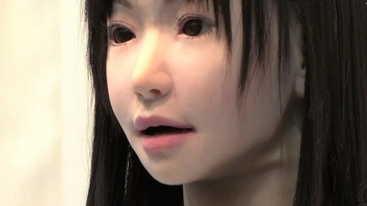

What is PTX00R?
Today, ASCII Inc. brings you the latest state of the art technology - machines which are capable of managing household activities.
The PTX00R is capable of stimulus and response - in this case, it can touch, feel and hear just like any other ordinary human being. Our technology utilises a data warehouse to determine the tasks which should be conducted as a response to stimuli. For example, you call the machine and ask for a cup of coffee, it will then go to your kitchen, make a cup of coffee and then bring it to you.
In addition, PTX00R will be availiable as pickup only in the store only for $8000.

A Japanese made robot.